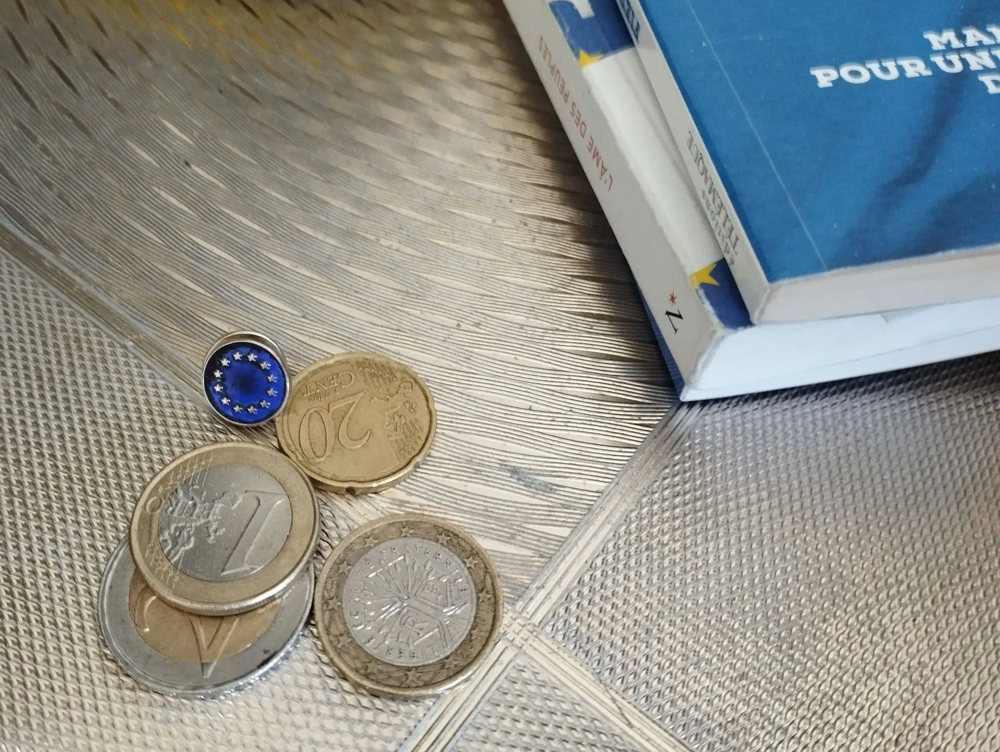
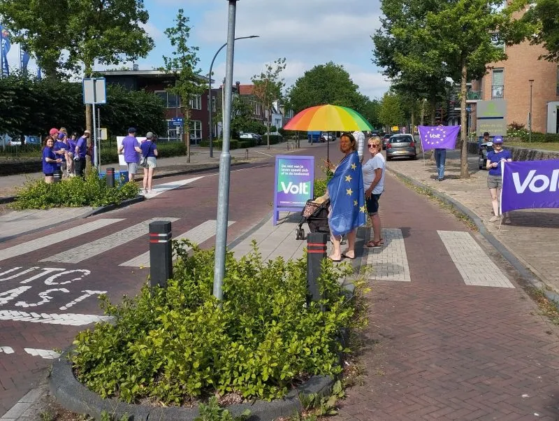
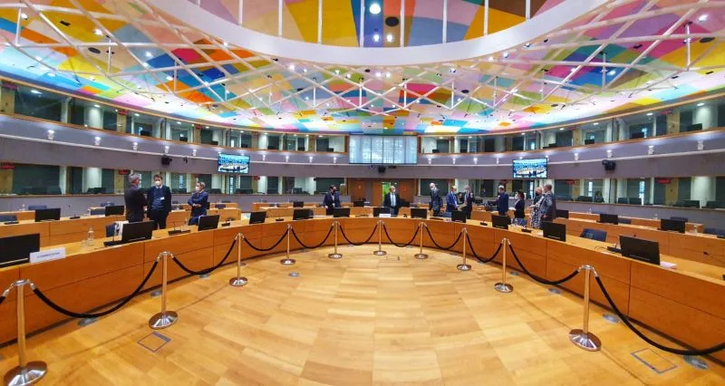
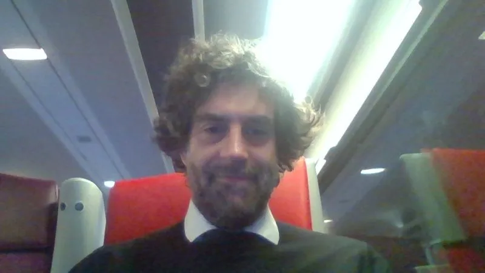
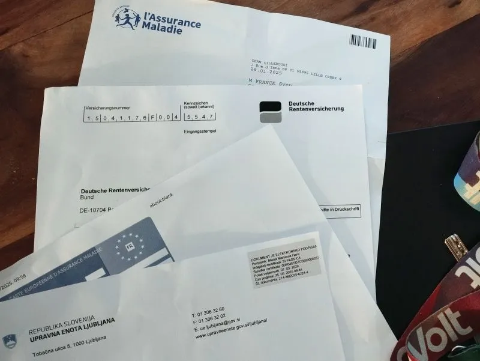
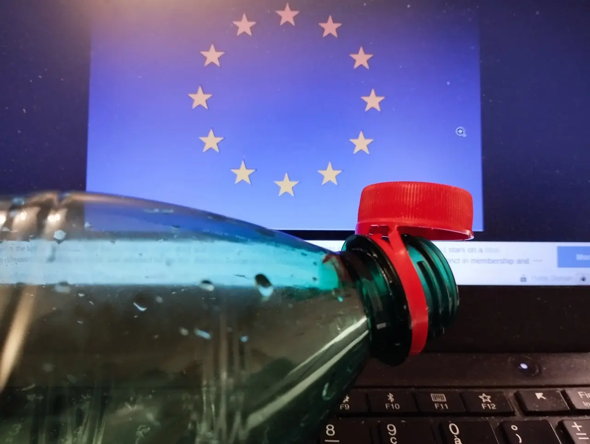
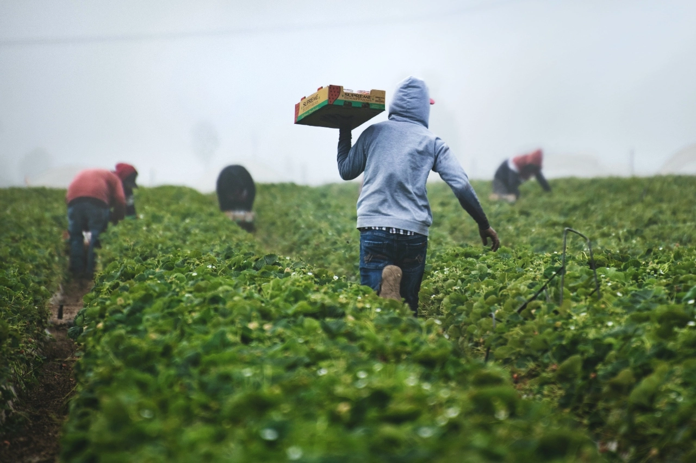
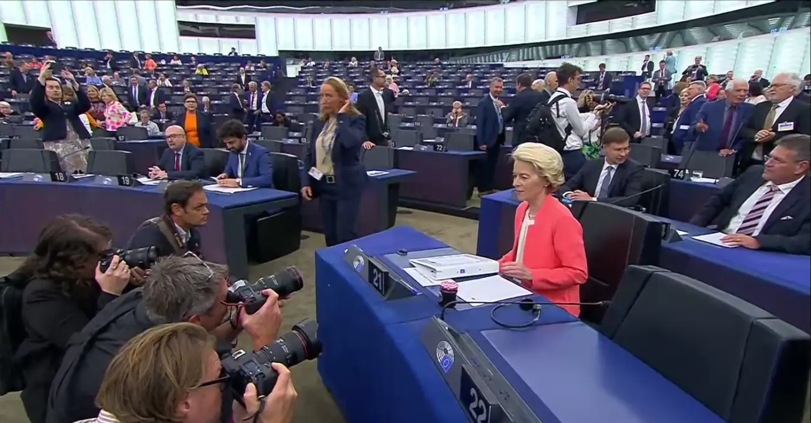

Blog
Des réflexions sur la politique en Europe.
2026
-

Eurobonds pour l'Allemagne, armée européenne pour le Danemark
(Sven Franck, )
Après le staccato de déclarations dociles des dirigeants européens et nationaux sur le Venezuela, Trump a désormais le regard fermement tourné vers le Groenland. Le Danemark, quant à lui, a refusé il y a plusieurs mois tout soutien militaire de l’UE et des États membres. Face à la réalité brutale, faut-il reconsidérer cette position ? Lire la suite. -

First we take Maduro, then we take Greenland?
(Sven Franck, )
Alors que les États-Unis ne cachent plus leurs objections à une Europe unie, que certains États membres disposent des armes nucléaires et restreignent la liberté d'expression, on peut se demander quand le Danemark perdra le Groenland ou quand des hélicoptères exfiltreront Emmanuel Macron après l'inéligibilité de Marine Le Pen aux présidentielles. Sommes-nous prêts à la politique étrangère façon MAGA ? Lire la suite.
2025
-

2026 : leadership européen recherché !
(Sven Franck, )
Tout aficionado de l'UE est sans doute tombé sur la Commission européenne s’auto-félicitant pour sa grande réussite de l’année : la prise USB-C. À ce moment décisif pour l’Union européenne, on pourrait espérer que notre présidente de la Commission vise audacieusement les étoiles afin de nous faire au moins atterrir sur la lune d’un changement des traités. Cela n’arrivera pas. Lire la suite. -

Avoirs gélés : de Moscou avec amour
(Sven Franck, )
La tension monte à l’approche du Conseil européen sur le financement de l’Ukraine. La question centrale est de savoir si et comment « dégeler » les 210 milliards d’euros d’avoirs russes détenus par Euroclear en Belgique afin de financer la défense et la reconstruction de l’Ukraine. Entre les menaces de poursuites judiciaires de la Russie et la volonté des États-Unis de contrôler les dépenses, la pression sur nos dirigeants nationaux monte. Lire la suite. -

Quid de la stratégie Européenne de la sécurité ?
(Sven Franck, )
La semaine écoulée a été une révélation pour les transatlantistes, avec la publication de la National Security Strategy américaine et Elon Musk, contrarié par une amende de 140 millions d’euros pour violation du Digital Services Act, appelant à la dissolution de l’UE. La réponse de l’Europe : on est BFF, on l’a toujours été, on le sera toujours. Vraiment ? Lire la suite. -

Rave, rave into the dying of the light ?
(Sven Franck, )
Jürgen Habermas estime que « davantage d’intégration politique, du moins au cœur de l’Union européenne, n’a jamais été aussi vitale pour notre survie. Et jamais aussi improbable. » Pour ma part, je me range plutôt avec Dylan Thomas et « do not go silent gentle into that good night » Lire la suite. -

Pourquoi Trump peut-il proposer des lois européennes et pas le Parlement ?
(Sven Franck, )
L’omnibus de la Commission européenne montre qui a de l’influence en Europe. Si nous professionnalisons la collecte de signatures, nous pourrions y opposer les ICE. Lire la suite. -

Démocratie Européenne: Comment la faire?
(Sven Franck, )
J’essaie actuellement une première : soumettre une motion à l’ordre du jour de l’Assemblée générale de Volt Europa. Cela signifie faire campagne sur un sujet au-delà des frontières et faire fonctionner notre démocratie européenne. Lire la suite. -

Jour de la marmotte européen : Allons-nous jamais nous réveiller ?
(Sven Franck, )
Si vous êtes passionné par l’Europe ou faites partie de la population record qui pense que « plus d’Europe » est plus que justifié, vous devez aussi commencer à croire que nous vivons l’équivalent d’un Jour de la marmotte européen. Lire la suite. -
Trouble in France
(Sven Franck, )
Après le hara-kiri du Premier ministre François Bayrou sur le budget, le président Macron a rapidement nommé Sébastien Lecornu comme nouveau Premier ministre. On peut se demander combien de cartes le président a encore dans sa manche, sachant que tenter de faire passer un budget similaire risque de conduire son successeur au même sort. Lire la suite. -

Une Europe des nations ? ü§® Non merci !
(Sven Franck, )
Giorgia Meloni ne voulait pas qu’on lui vole la vedette lors de la récente Meeting de Rimini. Contrairement à Mario Draghi, qui plaidait pour l’intégration européenne, elle défendait une "Europe des Nations". Car de mettre le loup dans la bergerie sera la solution. Lire la suite. -

Chat Control : la fin du secret de la correspondance ?
(Sven Franck, )
Même si 72 % de la population européenne est contre, la surveillance totale de notre communication numérique pourrait bientôt devenir une réalité. Donc, il faut alors aussi abolir le secret de la correspondance. Lire la suite. -
État de l’Union européenne : Assez de beaux discours
(Sven Franck, )
Tout a été dit sur le sommet de la Maison-Blanche, mais s’il y a une chose qui ressort après le sommet de l’OTAN, l’accord commercial UE–US et le week-end dernier, c’est que l’UE doit faire une sérieuse introspection suivie de réformes tout aussi sérieuses. Lire la suite. -

Fork l'UE
(Sven Franck, )
Quelle que soit la vision d'une future Union européenne, toute modification des traités nécessitera l'unanimité. Comme en informatique, la simple menace d'un fork va créer un levier. Lire la suite. -
 Budget de l’UE : compter les centimes au lieu de viser grand ?
(Sven Franck, )
Hier, la Présidente de la Commission Ursula von der Leyen a présenté le cadre du nouveau budget européen (le MFF), qui sera négocié au cours des 24 prochains mois. Il s'élève à 1 984 milliards d’euros, soit 1,26 % du revenu national brut. En réalité, cela devrait être bien plus. Lire la suite. -

Innovation ou bureaucratie ?
(Sven Franck, )
Il y a quelques mois, j'ai soumis un projet au Fonds européen de la défense. Notre consortium composé de PME a obtenu une excellente note à l'évaluation pour son caractère innovant. Mais comme seulement un projet soit financé et que nous n'étions pas le meilleur projet, le nôtre a été jugé éligible mais se trouve sans financement. Lire la suite. -
Motion de Censure: démissionner la Présidente de la Commission?
(Sven Franck, )
La semaine dernière, un député européen roumain du groupe conservateur ECR a déposé une motion de censure contre la Présidente de la Commission Ursula von der Leyen, concernant son rôle dans le scandale Pfizergate ainsi que son ingérence dans des élections nationales. Suspense. Lire la suite. -
 Les contrôles aux frontières sont comme les partis nationaux
(Sven Franck, )
Ce week-end, je suis allé en bus de Ljubljana à Munich pour attraper mon train pour Utrecht. Malheureusement, les contrôles illégaux aux frontières de l'Allemagne, et maintenant aussi de l’Autriche, ont rapidement compromis mes plans de voyage. Lire la suite. -

5% pour l'OTAN
(Sven Franck, )
C'est le sommet de l'OTAN et Mark Rutte a déjà décidé du résultat avant toute discussion, dans un message poétique : « Nous allons désormais consacrer 5 % du PIB à la défense » — bien plus que les 2 % par an auxquels les membres de l'OTAN se sont engagés. Lire la suite. -
 Il faut un trilogue pour la politique étrangère européenne
(Sven Franck, )
Récemment, j'ai vu un discours de Jeffrey Sachs au Parlement européen où il critiquait le fait que l'UE n'a toujours pas de doctrine pour une politique étrangère européenne. Je suis d'accord. Lire la suite. -

Schengen : libre circulation pour les citoyens ou les ressources humaines ?
(Sven Franck, )
Schengen fête son anniversaire ! Le 14 juin 1985, l'accord abolissant les frontières intérieures européennes a été signé. 40 ans plus tard, 29 pays font partie de l'espace Schengen : l'UE sans Chypre ni Irlande, mais avec la Suisse, la Norvège, le Liechtenstein et l'Islande. Lire la suite. -
 UE : Bon pour les affaires ?
(Sven Franck, )
Récemment, j'ai regardé un débat sur les montagnes russes des droits de douane de Trump. Une phrase m'est restée en mémoire : l'Amérique a les idées, la Chine les usines, et l'Europe... seulement la réglementation Lire la suite. -

Et si on volait enfin le sujet préféré de l'extrême droite ?
(Sven Franck, )
Encore des élections anticipées. Cette fois, c’est Geert Wilders qui a fait éclater la coalition de droite conservatrice aux Pays-Bas, parce qu’elle refusait de soutenir sa politique du "0 asile". Dans quelques mois, on reparlera encore de... migration. Encore ? Vraiment ? Lire la suite. -

40 ans de marketing avec seulement un drapeau ?
(Sven Franck, )
Hier, il y a 39 ans, le 29 mai 1986, le drapeau européen a été officiellement inauguré. À cette occasion, un magazine a publié un article sur l’identité européenne sur Facebook… et s’est pris un "shitstorm" : c’est quoi, au juste, l’identité européenne ? Lire la suite. -
 La folie bureaucratique nationale
(Sven Franck, )
9h du matin. Courrier de l'office slovène de l'immigration. Après six mois, quelqu'un remarque qu'il manque une attestation d'assurance maladie. Ouf... Lire la suite. -

L'UE devrait-elle couper les réseaux sociaux ?
(Sven Franck, )
La consultation publique sur le futur bouclier de la démocratie en Europe touche à sa fin, et malgré le bruit de fond important venant de Slovaquie, il est urgent de rendre nos systèmes démocratiques plus résilients. Lire la suite. -
Youpi, le 9 Mai...
(Sven Franck, )
La Journ√©e de l‚ÄôEurope, youpi üá™üá∫ √áa fait d√©j√† un moment que je regrette que toute l‚ÄôEurope ne se sente europ√©enne que pendant 24 heures avant de retomber dans le nationalisme. C‚Äôest toujours le cas. Lire la suite. -

Mais ou est l'Europe ?
(Sven Franck, )
Les marchés boursiers flambent en rouge MAGA partout dans le monde après que le président américain Trump a dégainé son arme favorite, les droits de douane, avant de partir pour un week-end de golf de façon néronesque. La Chine a réagi immédiatement. L’Union européenne, elle, ne fait… rien. Comme d’habitude ? Lire la suite. -

Comment le Groenland a convaincu le Père Noël de s’habiller en bleu européen
(Sven Franck, )
Le Groenland a tenu tête à la famille Vance, en partant en mission pour convaincre le Père Noël d’abandonner son habit rouge MAGA pour du bleu européen. Avec le feu vert du pôle Nord, une pétition a été lancée pour demander aux fabricants de chocolat et détaillants de suivre l’idée. Lire la suite. -

Tarifs douaniers : pourquoi un jeu à somme nulle ?
(Sven Franck, )
Les États-Unis ont imposé des droits de douane de 25 % sur l’acier et l’aluminium en provenance d’Europe. Quel est le “end game” de l’Europe ? Car “œil pour œil” ne signifie pas que l’Europe doit s’arracher un œil simplement parce que l’Amérique le fait. Lire la suite. -

Fait ou Fiction ?
(Sven Franck, )
La crédibilité et la fiabilité font défaut dans le monde d’aujourd’hui. Plus Trump sème le chaos, plus l’Europe doit agir non seulement en défenseur de ses frontières, mais aussi de la vérité et de la science face à la fiction et aux mensonges. Lire la suite. -

Rien ne va plus ? Non. Il y a Volt.
(Sven Franck, )
Depuis Maastricht, nos gouvernements ont négligé de faire avancer l’Union européenne vers l’institution fédérale dont nous avons besoin aujourd’hui. Pourquoi pensez-vous que « ça ira » après les élections allemandes du 23 février ? Lire la suite. -

MEGA, MAGA, GAGA ?
(Sven Franck, )
L’extrême droite a passé des années à faire de l’immigration son cheval de bataille pour gagner les élections. Pourquoi ne pas copier cette stratégie et utiliser la présidence de Trump pour remettre en question le « mode de vie à l’américaine » et les véritables objectifs de l’extrême droite ? Lire la suite. -

Bananes : courbées. Capuchons : fixés. Réseaux sociaux : à votre tour !
(Sven Franck, )
Les effets négatifs des réseaux sociaux éclipsaient depuis longtemps leurs avantages, bien avant le retour de Donald Trump au pouvoir. Comme pour la malbouffe, la Commission européenne dispose des outils réglementaires pour nous protéger. Elle pourrait faire de l’espace numérique européen un monde meilleur. Cela devient urgent. Lire la suite. -

Pourquoi la Californie devrait rejoindre l'Europe
(Sven Franck, )
L’Union européenne ne devrait pas seulement répondre aux ambitions de Donald Trump avec sa boîte à outils réglementaire. Une Europe unie doit également chercher d’autres voies pour influencer l’opinion publique, tant chez elle qu’au-delà de ses frontières. Lire la suite. -

Alice au pays des merveilles
(Sven Franck, )
Un voyage au pays des merveilles pour découvrir si le slogan de l'AfD "Alice pour l'Allemagne" n'est qu'une imposture pour "Alice au pays des merveilles. Lire la suite. -
 Vœux 2025 : Plus d'Europe, moins de bouchons en plastique
(Sven Franck, )
Lorsque je vois la contribution autosatisfaite de la Commission européenne au sujet du connecteur USB-C, tout en grattant le couvercle en plastique de ma bouteille d’eau, je ne peux m’empêcher de me demander : Europe, ne devrais-tu pas être capable de faire plus que te soucier des bouchons en plastique ?Lire la suite.
2024
-

Pourquoi un vote de conviction est un vote utile
(Sven Franck, )
Le 9 juin, je voterai pour Europe Territoires Écologie : parce que c'est la seule chance pour la gauche de construire une majorité, et parce que Volt France en fait partie. Lire la suite. -

Un remaniement pour construire un nouveau château de cartes ?
(Sven Franck, )
Les élections européennes offrent une chance de briser l'impasse de notre système politique - en votant pour les petits partis tels que Volt France. Lire la suite. -
 Soyons francs : l'immigration est un apport précieux à notre économie
(Sven Franck, )
Notre économie dépend de l'immigration et notre diversité pourrait être l'un des plus grands atouts de la France. Lire la suite. -
 SOTEU 2023 - Bouger sans avancer
(Sven Franck, )
Dans son discours SOTEU 2023, Ursula von der Leyen a abordé une pléthore de sujets, mais n'a proposé que des mesures superficielles au lieu de faire progresser le projet européen. Lire la suite. -
![L'Union Européenne des États-Unis [Graphic par Midjourney]](img/FR-Graphics-European-Union-Of-America.webp)
Et si on censurait la Commission européenne ?
(Sven Franck, )
La récente nomination de Fiona Scott Morton, citoyenne américaine et lobbyiste pour Apple, Amazon et Microsoft, en tant qu'économiste en chef de la Direction générale de la concurrence de la Commission européenne, va faire le bonheur de l'extrême droite dans toute l'Europe lors des élections européennes de 2024. Lire la suite. -
![Les Avengers de la politique [Graphic par Midjourney]](img/FR-Graphic-Avengers-Politique.webp)
Pourquoi n'y a-t-il pas d'Avengers en politique ?
(Sven Franck, )
Un an avant les élections européennes et alors que la plupart des regards sont déjà tournés vers 2027, la politique française recommence sa recherche perpétuelle de l'équivalent de la voix - la personnalité qui unira le pays et deviendra son leader quintessentiel - en théorie. Lire la suite.